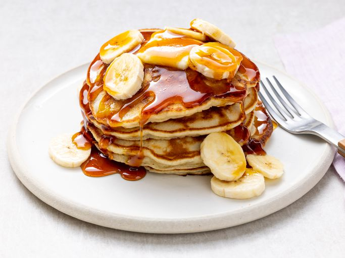
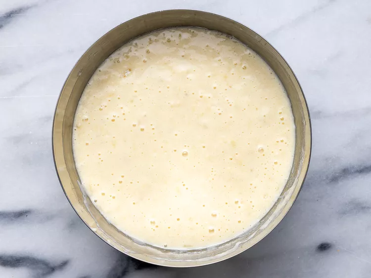
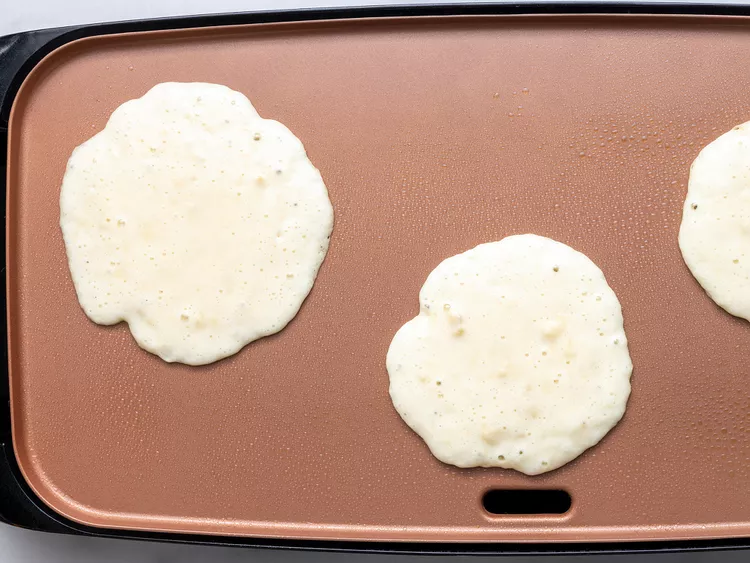

Banana Pancakes

Description
Crowd-pleasing banana pancakes made from scratch that are ready in minutes. A fun twist on ordinary pancakes.
Prep time: 5 mins | Cook Time: 10 mins | Total Time: 15 mins |
Servings: 6 Yeild: 12 pancakes
Ingredients
If you have ready-to-use bananas and a few kitchen staples, you already have everything you need to make perfect banana pancakes.
-
Flour All-purpose flour contains gluten, a protein that gives the pancakes structure and pleasant chewiness.
-
Sugar: Granulated sugar adds sweetness, helps hold in moisture, and may create a tender texture.
-
Baking Powder: Baking powder is a leavener. It creates air bubbles in the batter, which ensures light and fluffy pancakes.
-
Sugar: Two tablespoons of white sugar add subtle sweetness and enhance the flavor of the sauce.
-
Salt:Salt adds subtle depth to all sorts of sweet dishes, including pancakes. You won't be able to detect it in the finished product, but you'll miss it if you leave it out.
-
An Egg: Eggs work with the other ingredients to bind and provide structure. The fatty yolks also add rich flavor and extra moisture.
-
Milk: Not only does milk add flavor, it is the liquid base that's essential for dissolving the dry ingredients and creating a cohesive batter.
-
Vegetable Oil: Vegetable oil is harder to burn than butter, so it's a great fat to use in banana pancakes. It keeps the pancakes moist and prevents them from sticking to the pan.
-
Bananas: Last but certainly not least, you'll need two mashed bananas for these pancakes. The bananas will help hold the other ingredients together and add mellow, fruity flavor.
- 1 cup all-purpose flour
- 1 tablespoon white sugar
- 2 teaspoons baking powder
- ¼ teaspoon salt
- 1 egg, beaten
- 1 cup milk
- 2 tablespoons vegetable oil
- 2 ripe bananas, mashed
Steps
- Gather all your ingredients.

- Combine flour, white sugar, baking powder, and salt in a bowl. Mix together egg, milk, vegetable oil, and bananas in a second bowl.
- Stir flour mixture into banana mixture; butter will be slightly lumpy.

- Heat a lightly oiled griddle or frying pan over medium high heat. Pour or scoop the butter onto the griddle, using approximately 1/4 cup for each pancake.

- Cook until pancakes are golden brown, 3 to 5 minutes per side. Serve hot.

- Serve hot and enjoy!